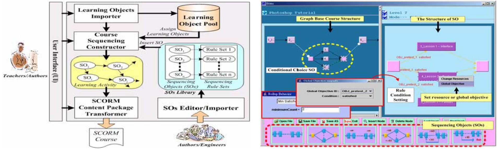

| |
| |
An Object based Authoring Tool for Creating SCORM Compliant Course
|
Objective
Modeled complicated sequencing rules into several basic components on the SCORM view, representing a basic sequencing graph on users' view to easily construct a complex structure of courses.
Paper
"An Object based Authoring Tool for Creating SCORM Compliant Course, " Jun-Ming Su, Shian-Shyong Tseng, Jui-Feng Weng, Kuan-Ting Chen, Yi-Lin Liu, and Yi-Ta Tsai, IEEE 19th International Conference on Advanced Information Networking and Applications (AINA 2005), March, 2005.
Abstract
In recent years, the reuse and sharing of teaching materials and instructional experiences among e-learning systems has become more and more important. Sharable Content Object Reference Model (SCORM), the most popular international teaching materials standard, uses metadata to specify the structure of every learning object and proposes the content aggregation scheme to package these objects with XML language format. However, for teachers and instructional designers, it is hard to understand the complicated sequencing rules in SN, much less use it to construct a SCORM course with desired learning guidance. By appropriately combining Sequencing Object SOs, users can easily design a complex course structure with desired learning guidance. A transformation algorithm was also proposed to transform the created graph based course structure into an Activity Tree (AT) with related sequencing rules. The transformed activity tree and related physical learning resources were packaged into a SCORM compliant course file. An additional benefit is that the authoring tool can be easily upgraded by importing a new SO instead of redesigning the tool only for new SCORM version. Another benefit is that a SCORM compliant course built by the object based authoring tool can be executed on the SCORM RTE system. The results show that this approach is workable and efficient.

|
|